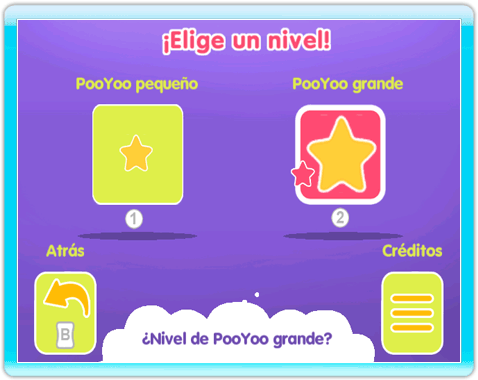

-
Empezar una partida
En la pantalla del canal apunta a COMENZAR y pulsa el Botón A para ejecutar el juego y acceder a la pantalla de título.
-
Pantalla de título
Pulsa un botón para entrar en el universo PooYoo.
-
Nivel de aprendizaje
Elige el nivel de aprendizaje adaptado al niño: PooYoo pequeño para los más jóvenes y PooYoo grande para los mayores. Selecciona una imagen con el puntero y luego pulsa el Botón A para validar. También se puede validar el nivel de dificultad pulsando directamente el Botón 1 o el Botón 2: 1 para PooYoo pequeño, 2 para PooYoo grande.

-
Elección de taller
Una vez seleccionada la dificultad, aparecerá el menú de selección de taller. Selecciona un taller con el puntero y pulsa el Botón A para comenzar con el taller. También se puede seleccionar directamente un taller pulsando el Botón 1 o el Botón 2: el Botón 1 para comenzar el taller de magia, el Botón 2 para comenzar el taller del color.
-
Elección de actividad
Si el niño quiere jugar a una actividad concreta, apunta con el mando de Wii a la imagen del juego en la parte inferior derecha y pulsa el Botón A para acceder al menú de selección de juego.
|
|
|